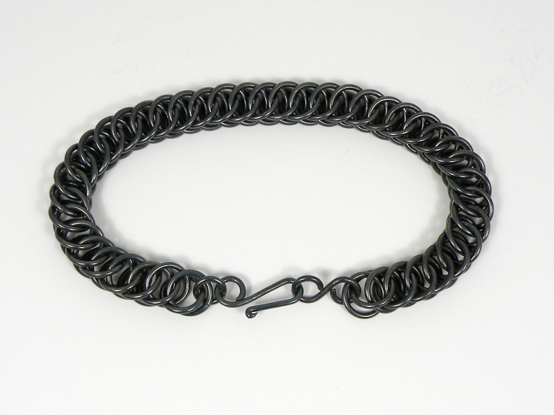

Chainmaille Bracelets - Steel Chainmaille Bracelets - Steel
Chainmaille Bracelets - Steel Chainmaille Bracelets - SteelSince the days of my first experiments with chainmaille, I have used that most traditional of armor metals, steel. As I have mentioned elsewhere on this site, I have a fondness for the look of blued steel, and have managed to produce quite durable oxide layers which make it somewhat suitable as jewelry. Above is a so-called "byzantine" weave in blued steel, and below a pattern usually named "half-persian."
As with any blued steel, the blueing will eventualy wear, or chip, and is not recommended for daily use; however, like a gun, a light coating of oil or wax will markedly improve the durabilty of the oxide layer. A freshly blued, waxed steel chain has a sinuous quailty and seems to flow over the skin; it wears like hematite, and chemically speaking, the layer of blueing is very similar.
Created by Sean Corron, April 2, 2011.